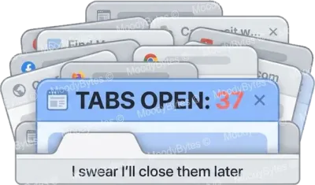
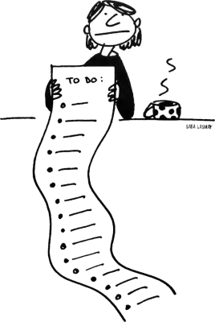
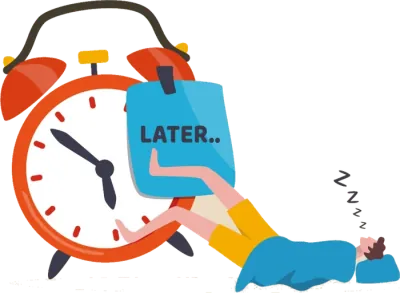
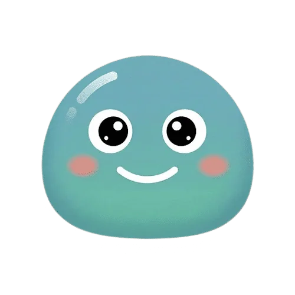

stop
overthinking.
start doing.
the friend who calls you out (kindly) and helps you take the one small step that gets you moving.


IT'S OKAY
stuck in your head?
we've all been there.
hours on a simple decision. the same tabs, open for weeks. a 10-minute task, avoided for a month.


so, meet nudge.
a friend, not a coach.
it calls you out (kindly) and helps you move forward.
no productivity guilt.
not hustle culture. not optimizing your life.
fewer stories. more living.
get unstuck from the stories we tell ourselves, and get back to your day.
8:00 am · daily nudge
a gentle ping.
a daily nudge notification checks in before the spiral starts.
9:15 am · mood check-in
one tap. that's it.
a quick mood check-in, right from your home screen widget.
11:40 am · the tab situation
you spill it.
23 tabs, one decision. nudge asks what you'd pick if you had to choose right now.
11:52 am · one small step
22 tabs closed.
the decision took four minutes. the drama took three weeks.
6:30 pm · conversation history
it's all still there.
what you were stuck on, and how you got unstuck.
tomorrow · memory
it remembers you.
memory that learns about you, so the next nudge fits a little better.
turns out, it was never...
...that deep.
the decision was never the hard part.
the story we told ourselves about it was.
how it works. no hustle required.
share what's on your mind.
get a fresh perspective.
take the simplest next step.
get back to living.
repeat.
enough thinking about it.
start your free trial today.
stop
overthinking.
start doing.
stuck in your head?
we've all been there.
hours on a simple decision. the same tabs, open for weeks. a 10-minute task, avoided for a month.
so, meet
nudge.
a friend, not a coach.
it calls you out (kindly) and helps you move forward.
no productivity guilt.
not hustle culture. not optimizing your life.
fewer stories. more living.
get unstuck from the stories we tell ourselves, and get back to your day.
a day
with nudge.
a gentle ping.
a daily nudge notification checks in before the spiral starts.
8:00 am · daily nudge
one tap. that's it.
a quick mood check-in, right from your home screen widget.
9:15 am · mood check-in
you spill it.
23 tabs, one decision. nudge asks what you'd pick if you had to choose right now.
11:40 am · the tab situation
22 tabs closed.
the decision took four minutes. the drama took three weeks.
11:52 am · one small step
it's all still there.
what you were stuck on, and how you got unstuck.
6:30 pm · conversation history
it remembers you.
memory that learns about you, so the next nudge fits a little better.
tomorrow · memory
turns out, it was never that deep.
the decision was never the hard part.
the story we told ourselves about it was.
how it works. no hustle required.
perspective. take one small step. get back
to living. repeat.